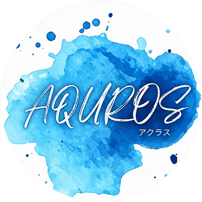

{{ w.title }}
{{ w.text }}

あなたの技術と結果を評価してくれる環境で
一緒に働きませんか？
水漏れやつまりは、毎日の暮らしをすぐに止めてしまいます。駆けつけて直せる人がいるだけで、お客様は安心できます。
AQUROSでは、水道修理やリフォームの経験を持つ方を業務委託として募集しています。これまでの経験は、そのまま現場で活かせます。
これまで培ってきた経験や技術を活かし、その力に見合った報酬を目指せる環境です。
水回りの修理・リフォームに関する業務をお任せします。お客様からのご依頼に応じて現場へ向かい、経験や技術を活かして対応していただくお仕事です。
水道修理やリフォームに興味をお持ちの方へ。
未経験者も経験者も活躍できる環境で、私たちと一緒に働いてみませんか？